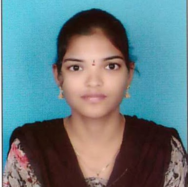

Pokuri Indu Priya
Technical Skill Trainer cum Developer in APSSDC
Contact: 7780468810
indupriya.p@apssdc.inAddress: Chirala
CAREER OBJECTIVES
Working as a Technical Skill Trainer cum Developer in APSSDC OCT-2017 to Tillnow
EDUCATIONAL QUALIFICATION
| Degree | Institute | Percentage |
| MCA | SACET | 78.89% |
| Bsc(stat) | Bharathi Degree College | 65% |
| Intermediate | Sree Vani Jr college | 66.9% |
| SSC | K.G.M girls high school | 67.3% |
MY ACHIVEMENTS ,CO-CURRICULAR ACTIVITIES And Certifications
- Presented a paper on “SMART NOTE TAKER “ Paper Presentation Participated and got 3 rd Prize for ‘SACETVAIBHAV - 2015’ held at St. Ann’s College of Engineering & Technology, Chirala.(SACET)
- Presented a paper on “E-BALL TECHNOLOGY” in SACETVAIBHAV-2016 conducted by St.Ann’s College of Engineering & Technology, Chirala.(SACET)
- Presented a paper on “ARTIFICIAL EYE ” in SAPTHAVARNA-2016 conducted by Chirala Engineering College (CEC),Chirala.
- Worked as Student Volunteer and Peer Educator in Red Cross Society event conducted at Bharathi Degree College (BDC),Chirala.
- I completed "Full Stack Web developer Nanodegree "certification course in "Udacity"
- I completed " Python for Everybody " certification course in "Coursera"
- I completed "Full Stack Web Development "certification course in "Unschool"
- I completed Different certifications in SoloLearn"
- Sincere and dedicated hard worker.
- Ability to work under pressures.
- Positive thinking and Enthusiasm.
- Innovative in performing any responsibility.
- HTML5 , CSS3 , Javascript
- C , Java , Python
- Windows , Linux
- Bootstrap , Flask , Django
STRENGTHS:
Skill Set
Web Technologies
Skill Set
Web Technologies
Programming Languages
Operating Systems
Frame Work
DECLARATION
I hereby declare that the information furnished above is true to the best of my knowledge.
Date:11/05/2021
Place:Chirala
Indu Priya Pokuri